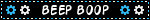
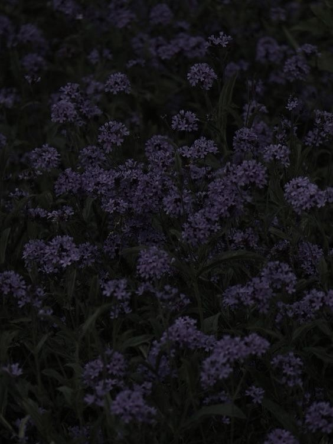
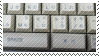
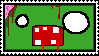
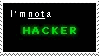
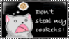

Nokira
Nokira

Age
18
Pronouns
he/him
Location
Italy
Interests
General
- Programming
- Hardware stuff
- Motorsport
- Travelling
Movies
& Series
- The Night Agent
- Silicon Valley
- 13 Reasons Why
- SWAT
- The Rookie
- Nemesis
- Narcos
- Everest
- Interstellar
- Gran Turismo
- Black Hawk Down
- Hacksaw Ridge
- 13 Hours
- American Sniper
- Sniper (all of them)
- Zero Dark Thirty
- Fury
- Sand Castle
- The Rip
- Shooter
- All quiet on the western front
Anime
- School-Live!
- Yeah, I just watched one single anime... But I liked it so much!
Music
- I Thought I saw Your Face Today
- Goosebumps
- Paint It Black
- XO
- Brought The Heat Back
- Outside
- Self Aware
- Addiction
- S&M
- Dracula
- Kiss Of Life
- Back On 74
- Red + Green
- Still Holy
- Bibles Over Birkinis
- Love Me Not
- 4th Of July
- Locked Out Of Heaven
- Take Me Home, Country Roads
- Paranoid
- Happy Together
- I pretty much listen to everything that sounds good to me, don't really have a preferred genre.
Books
- And Then There Were None
- CODE
- Clean Code
- I should read more...
Games
- Assetto Corsa Competizione
- Project Zomboid
- GTAV
- Minecraft
- PUBG Battlegrounds
- Six Days In Fallujah
- Insurgency Sandstorm
- Arma 3
- Ready Or Not
- Ghost Recon Wildlands
- DayZ
- Rainbow Six Siege
- Valorant
- Watch Dogs 2
- Firewatch
- Roblox
About
Hello! I go by nokira online, and I made this website so people could know a bit more about me. As you can see it's inspired by MySpace. I actually couldn't decide on the layout since I like many designs, but I never tried this one, and so here it is! I got interested in Computer Science and Engineering after all the years I spent playing videogames. Yeah.
Wanna know more?
I've been playing since I was a little kid. I started with a PS2, but I barely remember anything about it, because I was gifted a PS3. My first games were Minecraft, Skylanders, GTAV and COD. I remember playing A LOT of GTA online back at that time with some friends, while I mostly played the other games alone, I had a really big collection of skylanders. Then in 2016 I got a PS4. Unfortunately I had to sell everything I had with the PS3 to get some money for this new console, but it was worth it. My first physical game bought for the PS4 I believe were Rainbow Six Siege and Minecraft. I surely got more games sooner or later but those 2 are my very first ones. Then in late 2017 Fortnite came out and with the same friends I used to play with on PS3, we started this journey all together on Fortnite. Nowadays I may still play some of these games, but not as much as I did in the past, and unfortunately not with the same people, but the memories with them will last forever.
After some years I then switched to PC, I believe it happened in early 2021, I can't really remember. It was during covid, so I was spending a lot time at the PC between online classes and gaming. I was still playing Fortnite and Minecraft, but with my first PC now I could play Roblox the "better" way since previously I could only play on mobile and many of the old popular games, like Lumber Tycoon 2 were PC only and it was my dream to play them, and so I did.
While playing Roblox I would always be fascinated by how people some years older than me were making amazing games on this platform, and so I started messing around in Roblox Studio, where you can create your own games. Obviously it was nothing serious and everything I did was copy-pasted from youtube tutorials since I really could not understand the concept of "programming", but this is how my passion for it started.
Then the final year of middle school came, and I had to choose what to study in high-school, and I went with Computer Science.
So yeah, this is how everything started :)
Now I'm on my last year and I can't wait to study Computer Engineering in University. To be honest back in the days I even chose this so that I wouldn't have to study in Uni, but growing up everything changed and now this is what I do!
In my free time, apart from some gaming and studying, I like to watch Motorsport, GT3, GT4, F3, FREC, Hypercars pretty much all the cool cars (even tho I don't really enjoy F1).
That's everything... I hope.











